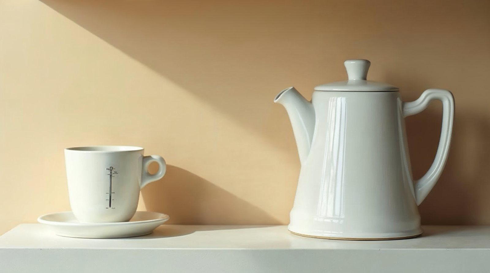
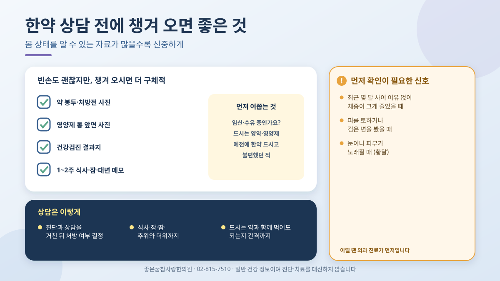

이종호 한의사 감수좋은꿈참사랑한의원 대표원장 (한의사 면허번호 19769)발행 2026-11-24 · 수정 2026-11-26
이 글의 차례
- 왜 미리 챙겨 오시면 좋을까요
- 비슷해 보여도 구분해 볼 점
- 먼저 이렇게 여쭙니다
- 일상에서 먼저 해 볼 수 있는 것
- 왜 대변과 땀까지 여쭐까요
- 상담 뒤 바로 정하지 않아도 될까요?
- 영양제가 많다면 어떻게 정리할까요?
- 상담 당일은 어떻게 준비하면 좋을까요?
- 상황별 예시
- 한약 상담에 대해 자주 하는 오해
- 상담에서 혀와 배는 왜 살피나요?
- 어르신을 모시고 오신다면
- 한의원에서 함께 살필 수 있는 경우
- 한약을 드시는 동안 함께 기록하면 좋은 것
- 임신을 준비 중이라면 무엇을 먼저 알려야 할까요?
- 한약을 짓기로 했다면 어떻게 진행되나요?
- 아이 한약 상담이라면 무엇을 챙길까요?
- 스스로 점검해 보세요
- 이렇게 기록해 오시면 상담이 쉬워집니다
- 이런 증상은 먼저 확인이 필요합니다
- 얼마나 지켜보고 언제 상담할까요
- 관련 글
상도역 3번 출구로 나와 한의원으로 오시는 분 가운데 한약 상담이 처음인 분이 많습니다. "뭘 가져가야 하나요?"라는 질문을 자주 받습니다. 빈손으로 오셔도 상담은 할 수 있지만, 복용 중인 약의 봉투나 처방전 사진, 영양제 이름, 최근 건강검진 결과지, 최근 1~2주 동안의 식사·잠·대변 메모를 챙겨 오시면 이야기가 훨씬 구체적으로 이어집니다.
한의원은 상도역 3번 출구에서 약 200m 직진한 뒤 오거리에서 우회전해 약 200m 오시면 있는 신성빌딩 3층·5층입니다. 약 봉투나 결과지는 종이를 그대로 가져오셔도 되고, 휴대폰 사진으로 보여 주셔도 됩니다.
왜 미리 챙겨 오시면 좋을까요
한약 상담을 찾게 되는 피로, 소화 불편, 잠 문제는 원인이 겹쳐 있는 경우가 많습니다.
- 같은 "피곤하다"도 잠 부족, 소화, 빈혈이나 갑상선, 스트레스처럼 이유가 여러 가지입니다.
- 복용 중인 양약이나 영양제가 속 불편이나 잠에 영향을 주기도 합니다.
- 식사 시각과 양이 불규칙하면 소화와 기운이 함께 흔들릴 수 있습니다.
- 검진 결과지의 간 수치, 콩팥 수치, 혈당은 처방을 정할 때 함께 고려하는 정보입니다.
- 그래서 몸 상태를 알 수 있는 자료가 많을수록 처방 여부를 신중하게 정할 수 있습니다.
비슷해 보여도 구분해 볼 점
- 아침에 일어나기 힘들고 낮에 졸린 피로는 잠의 길이와 질을 먼저 살펴봅니다.
- 밥을 먹고 나면 유독 처지고 더부룩한 피로는 소화와 식사 습관을 함께 봅니다.
- 숨이 차고 어지러우며 얼굴빛이 창백한 피로는 빈혈 같은 검사가 먼저 필요한지 살핍니다.
- 체중 변화와 함께 더위나 추위를 유난히 타는 피로는 갑상선 검사가 필요한지도 함께 봅니다.
이 차이를 스스로 가려 오실 필요는 없습니다. 언제 가장 피곤한지, 무엇을 할 때 더 처지는지만 알려 주시면 진료실에서 함께 살펴봅니다.
먼저 이렇게 여쭙니다
- 요즘 가장 신경 쓰이는 불편은 무엇이고, 언제부터였나요?
- 지금 드시는 양약이나 영양제가 있나요?
- 최근 1년 안에 건강검진을 받으셨나요?
- 임신 중이거나 수유 중인가요?
- 전에 한약을 드시고 불편했던 적이 있나요?
일상에서 먼저 해 볼 수 있는 것
- 복용 중인 약은 약 봉투나 처방전을 사진으로 찍어 오기
- 영양제와 건강기능식품은 통의 앞면과 성분표를 사진으로 남기기
- 최근 건강검진 결과지가 있다면 챙기기
- 최근 1~2주 동안의 식사 시각, 잠, 대변 상태를 짧게 메모하기
- 상담 당일에는 혀 색을 가리지 않도록 진한 커피나 색이 진한 음료, 사탕은 잠시 피하기
- 복용 기간, 함께 먹는 약, 음식 주의처럼 궁금한 점을 휴대폰 메모에 미리 적어 오기
왜 대변과 땀까지 여쭐까요
한약 상담에서 대변의 모양과 횟수, 땀이 나는 정도, 추위와 더위를 타는지를 여쭈면 의아해하시는 분도 있습니다. 이런 것들은 소화와 몸의 열·찬 기운을 짐작하는 데 중요한 단서가 됩니다.
예를 들어 같은 피로라도 변이 묽고 손발이 찬 분과, 변비가 있고 얼굴에 열이 오르는 분은 처방을 다르게 살핍니다. 부끄러워하지 마시고 평소 모습 그대로 말씀해 주세요.
상담 뒤 바로 정하지 않아도 될까요?
상담을 받고 나서 한약을 드실지 바로 정하기 어렵다면 집에서 충분히 생각해 보셔도 됩니다. 가족과 상의하거나 드시는 다른 약을 다시 확인한 뒤 정하셔도 괜찮습니다.
진찰 결과 한약보다 생활 리듬을 먼저 정리하거나 다른 검사를 먼저 받아 보시도록 안내드리는 경우도 있습니다. 그럴 때는 왜 그렇게 판단했는지, 집에서 먼저 해 볼 것은 무엇인지 함께 말씀드립니다.
영양제가 많다면 어떻게 정리할까요?
영양제를 여러 가지 드신다면 통을 한 번에 모아 앞면과 성분표를 차례로 찍어 오세요. 하루에 언제, 몇 알씩 드시는지도 함께 적어 두시면 좋습니다.
비슷한 성분이 겹쳐 있는 경우도 있어, 상담 때 그 목록을 하나씩 함께 봅니다.
상담 당일은 어떻게 준비하면 좋을까요?
상담 전날은 평소처럼 지내시는 것이 좋습니다. 일부러 굶거나 평소보다 훨씬 많이 자면 그날의 몸 상태가 평소와 달라져 살피기 어려울 수 있습니다.
맥을 짚을 때 손목이 편하도록 소매가 넉넉한 옷을 입고 오시면 좋습니다. 필요에 따라 배를 살피는 복진도 하므로 편한 옷차림이 도움이 됩니다.
뛰어오셨거나 계단을 급히 오르셨다면 잠시 숨을 고르신 뒤 진맥을 합니다. 시간 여유를 두고 오시면 상담도 차분하게 이어집니다.
상황별 예시
- 예를 들어 야근이 잦은 직장인이 피로 때문에 보약을 생각하고 오시는 경우, 잠드는 시각과 카페인 섭취, 주말에 몰아 자는지까지 여쭙습니다. 피로가 몇 달째 이어지는데 검진을 오래 받지 않았다면 원내 혈액 검사를 함께 살피거나 내과 검사를 먼저 안내할 수 있습니다.
- 예를 들어 출산 뒤 수유 중인 분이라면 약재마다 수유 중 안전성을 따로 검토해야 해, 수유 여부와 하루 수유 횟수, 드시는 영양제를 알려 주시면 도움이 됩니다.
- 예를 들어 혈압약, 당뇨약 등 여러 약을 드시는 어르신이라면 약 봉투를 모두 담아 오시거나, 자녀분이 약 이름을 사진으로 찍어 함께 보여 주셔도 됩니다. 함께 드셔도 되는지와 시간 간격은 그 목록을 보고 살핍니다.
한약 상담에 대해 자주 하는 오해
- "보약은 누구에게나 좋다"고 여기기 쉽지만, 같은 피로라도 원인이 달라 진찰 뒤 한약이 필요하지 않다고 안내드리는 경우도 있습니다.
- "양약을 먹고 있으면 한약은 안 된다"고 단정하기도 하지만, 드시는 약 목록을 먼저 보고 정합니다.
상담에서 혀와 배는 왜 살피나요?
혀의 색과 두께, 혀에 낀 백태의 모양은 소화 상태와 몸의 열·찬 기운을 짐작하는 데 참고가 됩니다.
배를 눌러 보는 복진은 배가 단단하거나 차가운 곳, 누를 때 불편한 곳이 있는지 살피는 과정입니다. 맥과 혀, 배를 함께 보고 생활 이야기를 더하면 처방 여부를 더 신중하게 정할 수 있습니다.
어르신을 모시고 오신다면
어르신은 드시는 약이 많고 약 이름을 기억하기 어려우신 경우가 많습니다. 약 봉투와 함께 약국에서 받은 복약 안내문이 있으면 챙겨 주세요.
평소 식사량과 잠, 화장실 습관을 곁에서 보신 가족이 함께 말씀해 주시면 상담에 큰 도움이 됩니다. 한약을 드시게 되면 복용 시간과 방법을 보호자께도 함께 설명드립니다.
한의원에서 함께 살필 수 있는 경우
- 한약 상담은 진단과 상담을 거친 뒤 처방 여부를 정합니다.
- 식사, 잠, 대소변, 땀, 추위와 더위를 타는 정도까지 몸 전체의 리듬을 함께 여쭙습니다.
- 복용 중인 약이 있으면 함께 드셔도 되는지, 시간 간격은 어떻게 할지 함께 살핍니다.
좋은꿈참사랑한의원에서는 진맥과 함께 필요에 따라 설진·복진으로 몸 상태를 살피면서 불편한 점과 생활을 충분히 듣고, 한약이 필요한지, 필요하다면 어떤 처방이 맞는지 정합니다. 첫 방문에는 접수 때 기본 정보를 적고, 진료실에서 챙겨 오신 약 봉투와 검진 결과지를 함께 보며 이야기를 나눕니다.
필요하다고 판단될 때 인바디 770으로 체성분을 보거나 원내 검사기로 당화혈색소·혈액 검사를 함께 살피며, 내과 진료가 먼저 필요해 보이면 그 이유를 설명드립니다. 한약은 원내에서 달이며 대표원장이 약재를 직접 검수합니다.
귀가 전에는 복용법과 지켜볼 점, 다음 상담 시기를 알려 드립니다. 한약 비용과 받으시기까지 걸리는 기간은 처방에 따라 달라 방문 전 전화로 확인해 주세요.
한약을 드시는 동안 함께 기록하면 좋은 것
- 하루 중 한약을 드신 시각과 빠뜨린 날
- 소화, 대변, 잠의 변화를 날마다 한 줄씩
- 속쓰림, 묽은 변, 두드러기처럼 평소와 다른 반응이 있었는지
- 새로 먹기 시작한 약이나 영양제
한약을 드신 뒤 불편한 반응이 생기면 복용을 멈추고 연락해 주세요. 병원에서 처방받은 약은 처방한 의사와 상의 없이 끊지 마시고, 한약과 함께 드시는 방법을 상담 때 함께 정합니다.
임신을 준비 중이라면 무엇을 먼저 알려야 할까요?
임신을 준비 중이거나 임신 가능성이 조금이라도 있다면 상담 처음에 먼저 말씀해 주세요. 약재를 고를 때 따로 살펴야 할 점이 있어, 산부인과 진료 내용과 함께 신중하게 정합니다.
마지막 생리 시작일과 주기를 메모해 오시면 상담에 도움이 됩니다. 산부인과에서 받은 검사 결과나 복용 중인 엽산 같은 영양제도 함께 알려 주세요.
한약을 짓기로 했다면 어떻게 진행되나요?
상담 뒤 한약을 드시기로 정하면 처방과 복용법, 드시는 기간을 먼저 설명드립니다. 남은 약이 닷새쯤일 때 연락 주시면 이어 갈지, 조정할지 함께 상의합니다.
받으시는 날짜는 처방에 따라 달라 상담 때 함께 안내해 드립니다.
아이 한약 상담이라면 무엇을 챙길까요?
- 최근 키와 몸무게 기록, 영유아 검진 결과가 있다면 그 결과지
- 하루 식사량과 잘 먹는 음식, 잘 안 먹는 음식
- 잠드는 시각과 깨는 시각, 밤에 자주 깨는지
- 다니는 소아청소년과에서 받은 약이나 알레르기 이력
아이는 맛이나 양 때문에 한약을 먹기 어려워하는 경우도 있어, 평소 약을 어떻게 먹는지도 함께 알려 주시면 복용 방법을 정하는 데 도움이 됩니다. 아이 상담은 보호자와 함께 하시고, 소아청소년과에서 받은 약은 그 의사와 상의 없이 끊지 마세요.

스스로 점검해 보세요
- 지금 드시는 양약과 영양제 이름을 모두 적었거나 사진으로 찍어 두었다
- 최근 1년 안의 건강검진 결과지를 찾아 두었다
- 임신 중이거나 임신 가능성, 수유 여부를 확인했다
- 예전에 한약이나 음식으로 두드러기, 설사 같은 불편을 겪은 적이 있는지 떠올려 보았다
- 최근 1~2주 동안의 식사 시각, 잠든 시각, 대변 상태를 적어 보았다
- 가장 신경 쓰이는 불편이 언제부터였는지 말할 수 있다
이렇게 기록해 오시면 상담이 쉬워집니다
- 1~2주 동안의 식사 시각, 잠든 시각, 대변 상태
- 하루 중 기운이 가장 떨어지는 시간대와 그때 하던 일
- 여성은 최근 두세 번의 생리 시작일과 양의 변화
- 건강검진 결과지 중 혈압·혈당·간 수치 부분
- 알레르기가 있었던 음식이나 약
준비가 다 되지 않았어도 괜찮습니다. 다음에 오시면 챙겨 오신 약 봉투부터 함께 펼쳐 보고, 요즘 잠과 식사는 어떤지 여쭙겠습니다.
이런 증상은 먼저 확인이 필요합니다
- 최근 몇 달 사이 이유 없이 체중이 크게 줄어든 경우
- 피를 토하거나 검은 변을 봤거나, 눈이나 피부가 노랗게 변한 경우
이런 신호가 있으면 한의원보다 가까운 병원이나 응급실을 먼저 찾으세요.
얼마나 지켜보고 언제 상담할까요
- 며칠 무리한 뒤의 피로나 가벼운 속 불편은 잠과 식사 시간을 1~2주 맞춰 보며 지켜보셔도 됩니다.
- 생활을 정리해도 피로나 소화 불편이 2~3주 넘게 이어진다면 상담을 받아 보세요.
관련 글
- 한약 상담을 받을 때 무엇을 알려 주면 좋을까요?
- 혈압약이나 당뇨약을 먹고 있는데 한약을 함께 먹어도 되는지 어떻게 확인하나요?
- 한약을 먹는 동안 어떤 변화를 기록하고 언제 연락해야 하나요?

여쭙는 것
- 요즘 가장 신경 쓰이는 불편은 무엇이고, 언제부터였나요?
- 지금 드시는 양약이나 영양제가 있나요?
- 최근 1년 안에 건강검진을 받으셨나요?
생활에서 해 볼 것
- 복용 중인 약은 약 봉투나 처방전을 사진으로 찍어 오기
- 영양제와 건강기능식품은 통의 앞면과 성분표를 사진으로 남기기
- 최근 건강검진 결과지가 있다면 챙기기
한의원에서 함께 살필 것
- 한약 상담은 진단과 상담을 거친 뒤 처방 여부를 정합니다.
- 식사, 잠, 대소변, 땀, 추위와 더위를 타는 정도까지 몸 전체의 리듬을 함께 여쭙…
- 복용 중인 약이 있으면 함께 드셔도 되는지, 시간 간격은 어떻게 할지 함께 살핍니다.
먼저 확인이 필요한 신호
- 최근 몇 달 사이 이유 없이 체중이 크게 줄어든 경우
- 피를 토하거나 검은 변을 봤거나, 눈이나 피부가 노랗게 변한 경우
한눈에 보는 표
| 구분 | 핵심 |
|---|---|
| 여쭙는 것 | 요즘 가장 신경 쓰이는 불편은 무엇이고, 언제부터였나요? 지금 드시는 양약이나 영양제가 있나요? |
| 생활에서 해 볼 것 | 복용 중인 약은 약 봉투나 처방전을 사진으로 찍어 오기 영양제와 건강기능식품은 통의 앞면과 성분표를 사진으로 남기기 |
| 한의원에서 함께 살필 것 | 한약 상담은 진단과 상담을 거친 뒤 처방 여부를 정합니다. 식사, 잠, 대소변, 땀, 추위와 더위를 타는 정도까지 몸 전체의 리듬을 함께 여쭙습니다. |
| 먼저 확인이 필요한 신호 | 최근 몇 달 사이 이유 없이 체중이 크게 줄어든 경우 피를 토하거나 검은 변을 봤거나, 눈이나 피부가 노랗게 변한 경우 |
자주 묻는 질문
약 봉투를 못 챙겼는데 괜찮나요?
약 이름을 기억하시는 만큼 알려 주시거나, 약국 처방 기록을 휴대폰으로 보여 주셔도 됩니다.
상담만 받고 한약은 나중에 정해도 되나요?
네. 상담 뒤에 충분히 생각하고 정하셔도 되며, 진찰 결과 한약이 필요하지 않다고 안내할 수도 있습니다.
영양제는 한약과 같이 먹어도 되나요?
종류에 따라 다릅니다. 통의 앞면과 성분표 사진을 보여 주시면 함께 드셔도 되는지, 시간 간격을 어떻게 둘지 함께 살핍니다.
한약은 어디서 달이나요?
좋은꿈참사랑한의원은 원내에서 한약을 달입니다. 약재 확인과 계량 과정은 원내 탕전 기록에서 사진으로 보실 수 있습니다.
좋은꿈참사랑한의원은 재진 때 지난번 이야기부터 이어서 여쭙니다. 진료시간과 예약은 오시는 길에서 확인하세요.
어디서 상담받을 수 있나요?
좋은꿈참사랑한의원은 서울 동작구 만양로2길 2 신성빌딩 3층·5층(서울 동작구 상도동, 7호선 상도역 3번 출구 근처)에 있습니다. 한의사 3명(이종호 대표원장, 조영기 수석진료원장, 정원영 진료원장)이 진료합니다. 진료시간은 평일 09:30~20:00(점심 13:00~14:00), 토·일·공휴일 09:30~15:00이며, 방문 전 전화로 확인을 권합니다. 예약은 네이버 예약, 카카오톡 상담, 전화 02-815-7510로 받습니다.
이 글은 일반적인 건강 정보이며 개인의 진단이나 치료를 대신하지 않습니다. 증상이 있거나 복용 중인 약이 있다면 진료를 통해 확인하세요. 치료 효과는 개인마다 다를 수 있습니다.
작성 기준: 일반적으로 알려져 있는 건강 정보를 참고해 정리했습니다(대표원장 감수). 증상 기록은 1~2주 동안 하루 1회, 비슷한 시간에 적어 오시면 지난 상태와 비교하기 쉽습니다.